6 月 20 日：3D-DLP 等视觉表征论文归档
本页按日期归档近期论文，保留优先级、主题、来源与方法线索，方便回看同一批工作的研究脉络。
先读 3D-DLP。用自监督重建把 RGB-D/voxel 场景分解成 3D latent particles，是今天最直接的通用视觉表征学习论文。 其余论文按 P1/P2 与主题顺序扫读，重点看方法图、消融设置和是否能迁移到通用视觉表征。
论文索引
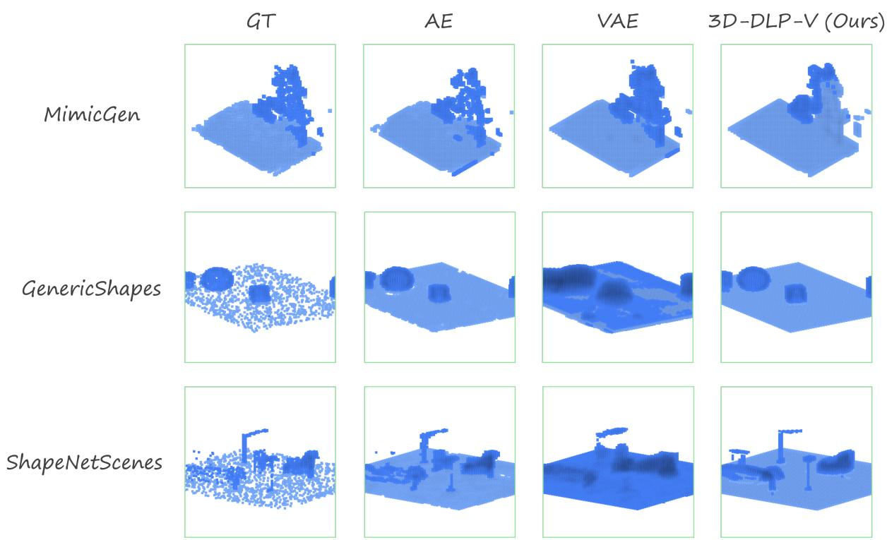
3D-DLP: Self-Supervised 3D Object-Centric Scene Representation Learning
高相关；详见方法、贡献和实验边界。
方法：用自监督重建把 RGB-D/voxel 场景分解成 3D latent particles，是今天最直接的通用视觉表征学习论文
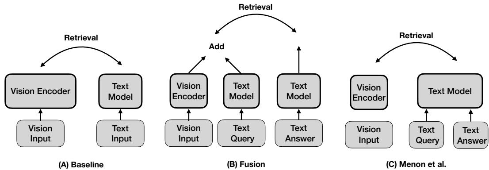
Language-Instructed Vision Embeddings for Controllable and Generalizable Perception
高相关；详见方法、贡献和实验边界。
方法：让语言在推理时动态指导视觉 encoder 生成任务中心 embedding，直接挑战静态视觉特征范式
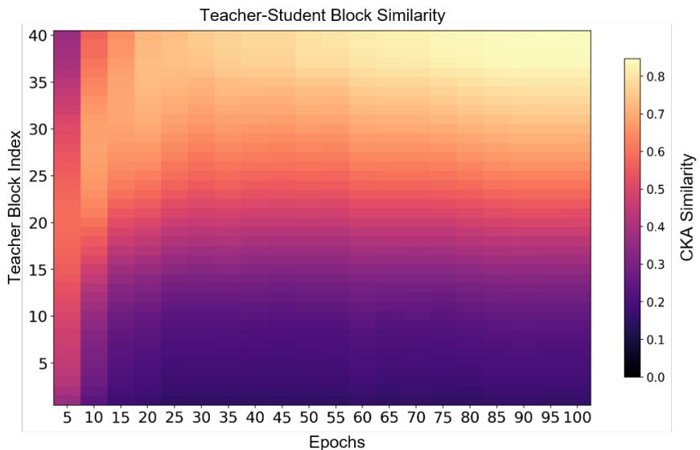
LEAP: Layer-skipping Efficiency via Adaptive Progression for Vision Transformer Distillation
高相关；详见方法、贡献和实验边界。
方法：把教师 ViT 的中间层当成自适应课程，缓解小模型直接模仿高层 DINOv2/VFM 特征的容量落差
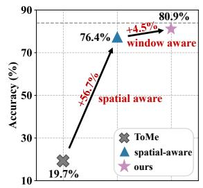
Spatial-Aware Reduction Framework: Towards Efficient and Faithful Visual State Space Models
高相关；详见方法、贡献和实验边界。
方法：说明视觉 Mamba/State Space 的 token reduction 必须保持二维网格拓扑，否则会严重损伤表征
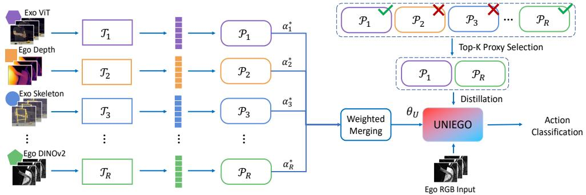
UNIEGO: Proxies as Mediators for Unified Egocentric Video Representation Learning
中高相关；详见方法、贡献和实验边界。
方法：用 proxy 中介层融合 ego/exo、RGB/depth/skeleton 与多个 foundation teacher，适合作为视频 SSL 蒸馏读物
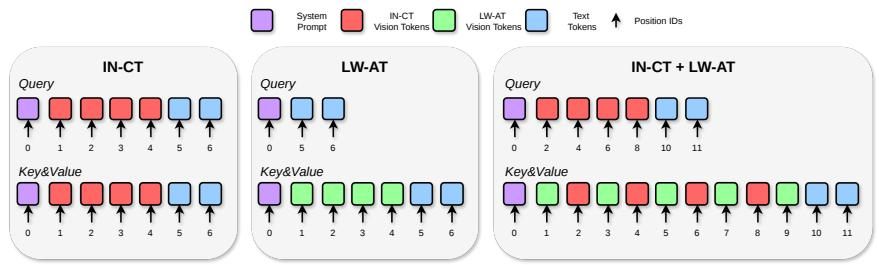
The Hidden Evolution of Disguised Visual Context inside the VLM
中高相关；详见方法、贡献和实验边界。
方法：比较视觉 token 作为上下文输入或层内注入时在 LLM 内部如何变成语言可用表征
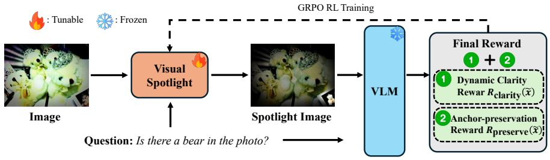
SPOT-E: Test-Time Entropy Shaping with Visual Spotlights for Frozen VLMs
中高相关；详见方法、贡献和实验边界。
方法：用问题条件 spotlight 和 entropy shaping 让冻结 VLM 读到小而关键的视觉证据
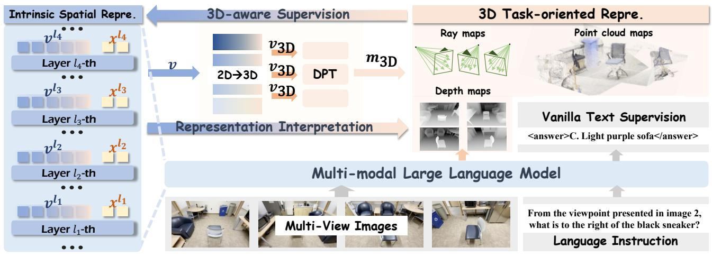
SpatialSV: Internalizing Interpretable 3D Spatial Awareness in MLLMs via Task-Oriented Visual Supervision
中高相关；详见方法、贡献和实验边界。
方法：把 MLLM 的 2D visual features 主动 lift 到深度、位姿、点云等显式 3D 表示
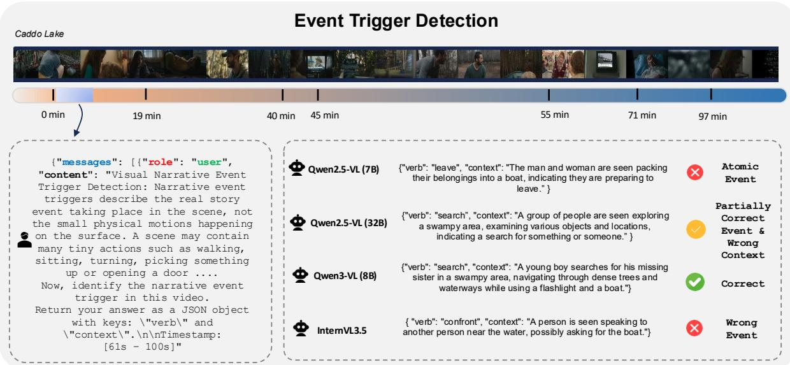
NEST: Narrative Event Structures in Time for Long Video Understanding
中高相关；详见方法、贡献和实验边界。
方法：以电影级长视频事件结构测试模型是否理解跨时间叙事，而不只是 needle retrieval
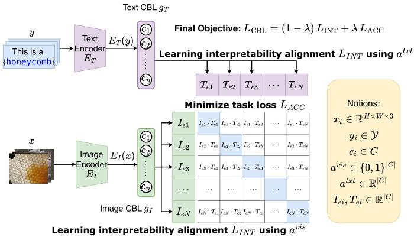
Multimodal Concept Bottleneck Models
中高相关；详见方法、贡献和实验边界。
方法：把图像和文本 embedding 映射到可解释概念瓶颈，适合评估 CLIP/VLM 表征是否可解释
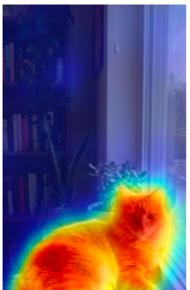
Timage: A Generative Text-in-Image Paradigm for Fine-Tuning Vision-Language Models
中相关；详见方法、贡献和实验边界。
方法：把 query 渲染进图像作为显式空间锚点，提醒 VLM 对齐可以发生在输入重构层
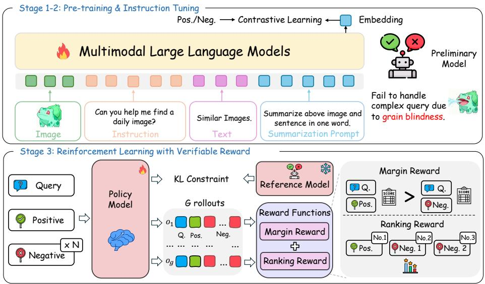
ELVA: Exploring Ranking-Driven Universal Multimodal Retrieval
中相关；详见方法、贡献和实验边界。
方法：用 ranking-driven RLVR 缓解复杂检索 query 的 grain blindness，和视觉-语言对比学习负样本设计有关
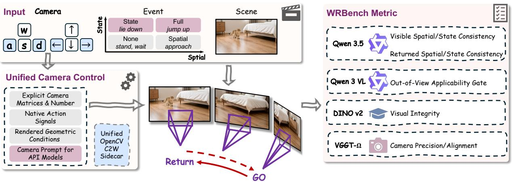
Current World Models Lack a Persistent State Core
中相关；详见方法、贡献和实验边界。
方法：WRBench 追问世界模型是否在目标离开视野后继续推进状态，是视频基础模型的重要诊断
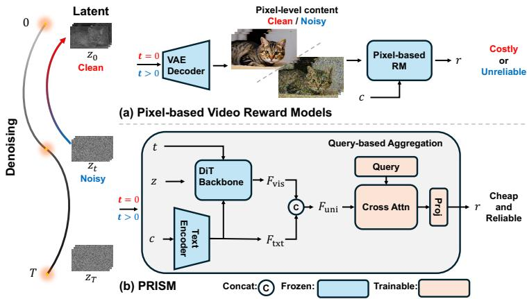
Through the PRISM: Preference Representation in Intermediate States of Video Diffusion Models
中相关；详见方法、贡献和实验边界。
方法：从冻结视频扩散模型的 noisy latents 中读出偏好信号，偏生成但涉及 latent representation 可判别性
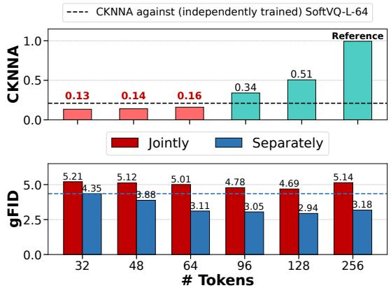
Variable-Length Tokenization via Learnable Global Merging for Diffusion Transformers
中相关；详见方法、贡献和实验边界。
方法：用 learnable global merging 做可变长视觉 tokenization，和视觉 latent 压缩/对齐有关